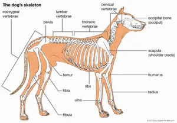

Dogs
There’s a reason we call dogs man’s best friend – it’s because these loyal creatures love us unconditionally and would do anything for their owner. But are some breeds more friendly than others? Well, every dog is different, and personalities can vary even amongst the same breed. But if you’re looking for a dog who is almost guaranteed to make you feel special, these are the top 20 most friendly dog breeds.

Dogs- Highly Social Animals
Dogs, like humans, are highly social animals and this similarity in their overall behavioural pattern accounts for their trainability, playfulnes and ability to fit into human households and social situations. This similarity has earned dogs a unique position in the realm of interspecies relationships.
The loyalty and devotion that dogs demonstrate as part of their natural instincts as pack animals closely mimics the human idea of love and friendship, leading many dog owners to view their pets as full-fledged family members.
The common name for the domestic dog is ‘Canis familiaris‘, a species of the dog family ‘Canidae‘. The dog is generally considered the ‘first’ domesticated animal.
Dogs can differ in appearance, function, temperament and size. Some small dogs can weigh as little as 1.5 pounds, whereas some larger dogs can weigh as much as 200 pounds.
Depending on the country, there are about 138 officially recognised dog breeds, categorised into 7 different groups.
Dogs fill a variety of roles in human society and are often trained as working dogs. For dogs that do not have traditional jobs, a wide range of dog sports provide the opportunity to exhibit their natural skills.
Skeletal structure
The skeletal frame of the dog consists of 319 bones. If a dog’s tail is docked or absent at birth, there obviously are fewer bones in the skeleton. The muscles and tendons of a dog are similar to those of a human; however, a dog’s upper body muscles bear half the weight of the entire body and are better developed than a human’s. The weight distribution between the front and the rear of the dog are relatively equal.
Top 10 hardest dogs to train
- Rottweilers
- American Pit Bull Terriers
- Siberian Huskies
- Bullmastiffs
- Chinese Shar-Pei
- Afghan Hounds
- Basset Hounds
- Beagles
- Bulldogs
- Chow Chows
Human Foods that are safe for dogs
- Carrots.
- Apples
- White rice
- Dairy products
- Fish
- Chicken
- Peanut butter
- Plain popcorn.